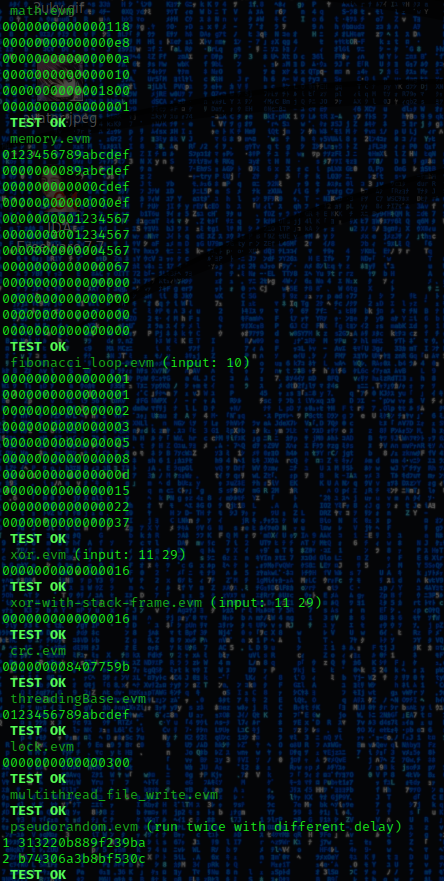

regression tests
-
pseudorandom.evm runs without deadlock (tested at least 30m long run)
-
tested with valgrind (no memory leaks
)
-
own tests could be found in analysis/samples and analysis/samples/precompiled
./test.sh
